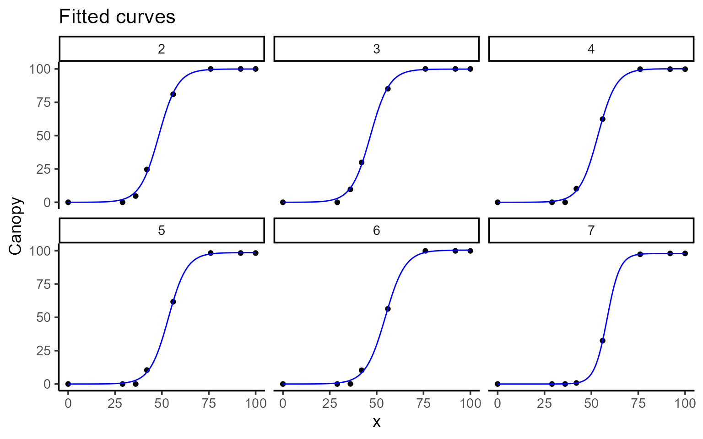
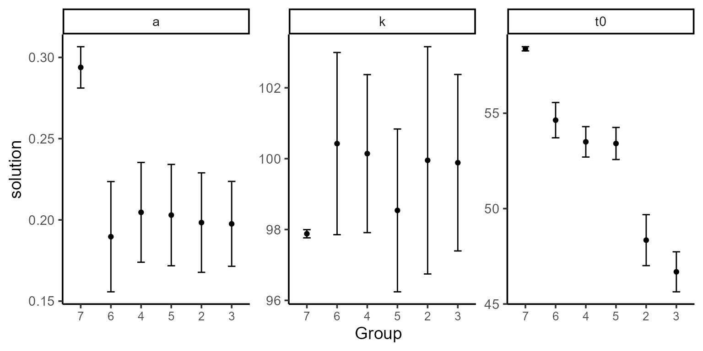
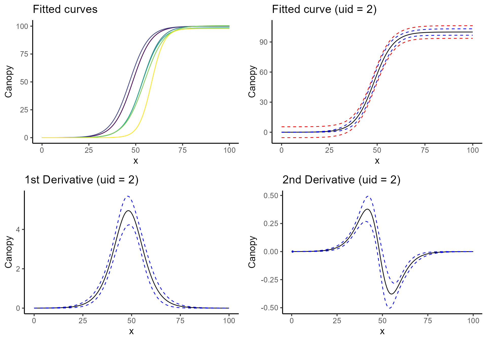

Loading dataset and libraries
library(flexFitR)
library(dplyr)
library(kableExtra)
library(ggpubr)
library(purrr)
data(dt_potato)
head(dt_potato) |> kable()| Trial | Plot | Row | Range | gid | DAP | Canopy | GLI |
|---|---|---|---|---|---|---|---|
| HARS20_chips | 1 | 1 | 1 | W17037-24 | 0 | 0.000 | 0.0000000 |
| HARS20_chips | 1 | 1 | 1 | W17037-24 | 29 | 0.000 | 0.0027216 |
| HARS20_chips | 1 | 1 | 1 | W17037-24 | 36 | 0.670 | -0.0008966 |
| HARS20_chips | 1 | 1 | 1 | W17037-24 | 42 | 15.114 | 0.0322547 |
| HARS20_chips | 1 | 1 | 1 | W17037-24 | 56 | 75.424 | 0.2326896 |
| HARS20_chips | 1 | 1 | 1 | W17037-24 | 76 | 99.811 | 0.3345619 |
Plotting predictions and derivatives
# Raw data with fitted curves
plot(mod, type = 1, color = "blue", id = plots, title = "Fitted curves")
# Model coefficients
plot(mod, type = 2, color = "blue", id = plots, label_size = 10)
# Fitted curves only
c <- plot(mod, type = 3, color = "blue", id = plots, title = "Fitted curves")
# Fitted curves with confidence intervals
d <- plot(mod, type = 4, n_points = 200, title = "Fitted curve (uid = 2)")
# First derivative with confidence intervals
e <- plot(mod, type = 5, n_points = 200, title = "1st Derivative (uid = 2)")
# Second derivative with confidence intervals
f <- plot(mod, type = 6, n_points = 200, title = "2nd Derivative (uid = 2)")
ggarrange(c, d, e, f)